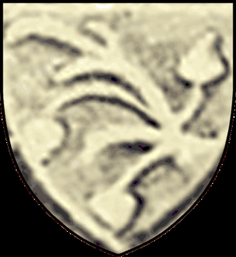

Fogde, Väpnare.
omkring 1350 Finland. [1]
efter 1423 Finland. [1]
Mårten Abrahamsson nämns 1379 i Kimito socken i Egentliga Finland. Han var fogde i Satakunda 1391. Han levde ännu 1423 och kallas då väpnare. Han var gift med Ragnhild Olofsdotter, dotter till Olof Jönsson, eller Olof Tavast, stamfar för den äldsta ätten Tavast. Hans son Mats Mårtensson (1420-1451) var lagman i Söderfinne lagsaga 1437 och riksråd 1438. Mats vapen var en liggande gren med två löv uppåt, ett nedåt.